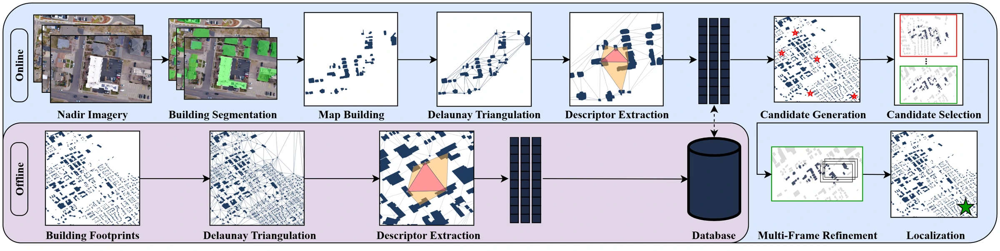

Large-Scale Geometric Map-Based Localization of UAVs in GNSS-Denied Urban Environments
Department of Computer Science · Colorado School of Mines
arXiv link forthcoming
Research video
00:59 · Project overviewFinding position
through geometry.
How can a UAV find its position when GNSS is unavailable? We match building patterns observed by a downward-facing camera to a reference building footprint map, using the spatial arrangement and shape of buildings to identify the location.
The system accumulates detections across video frames, builds a local map, and extracts geometric star descriptors from a Delaunay triangulation. Matching these descriptors against a large reference database produces candidate locations, which are ranked and refined across frames.
From observations to a map match.
Observe & accumulate
Segment buildings in aerial keyframes and stitch the detections into a unified local building map.
Describe the geometry
Encode local Delaunay triangle structure together with building compactness, elongation, rectangularity, and convexity.
Match & refine
Retrieve reference descriptors, rank candidate locations through consensus voting and geometric scoring, then refine the position across frames.

Localization at metropolitan scale.
Evaluated on seven real UAV flights across four municipalities, with reference maps containing up to approximately 277,000 buildings.
7 of 7 flights
7 of 7 flights
5 of 7 flights
Recall@1 counts flights whose top-ranked position estimate is within 100 m of ground truth. The evaluated BRM and NetVLAD baselines achieve 0% Recall@1 at ≈254 km² and ≈452 km².


Cite this work.
The arXiv identifier will be added when available.
@misc{terlizzi2026geometric,
title = {Large-Scale Geometric Map-Based Localization
of UAVs in GNSS-Denied Urban Environments},
author = {Terlizzi, III, Garth J. S. and Fathian, Kaveh},
year = {2026},
url = {https://ariarobotics.github.io/aerial_urban_localization/}
}